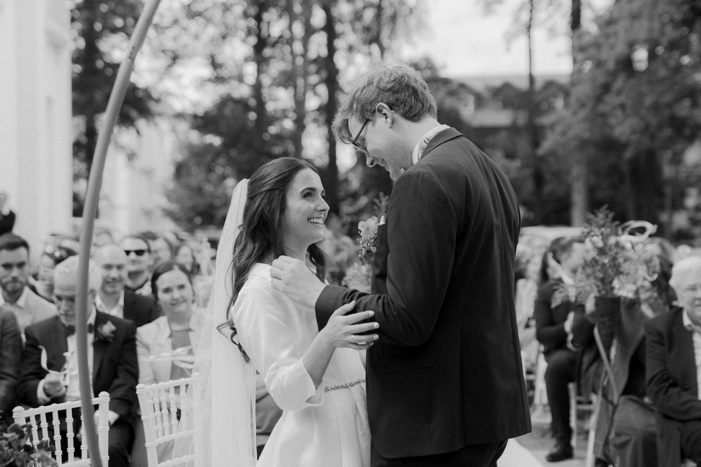
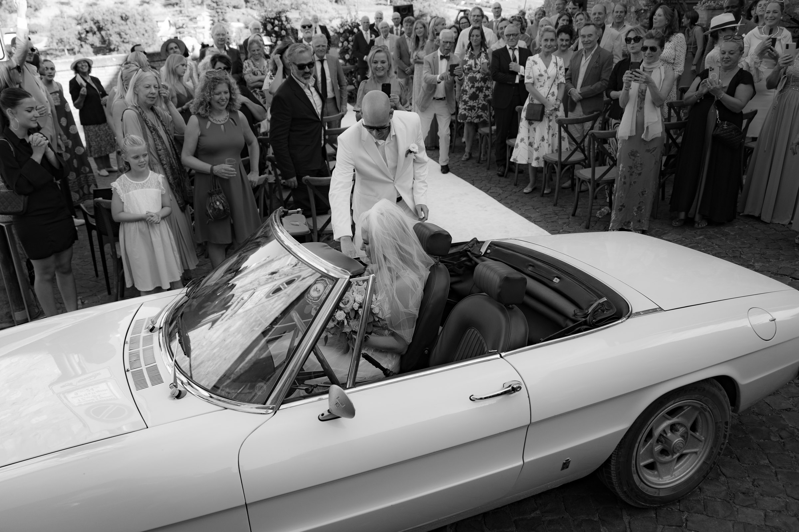
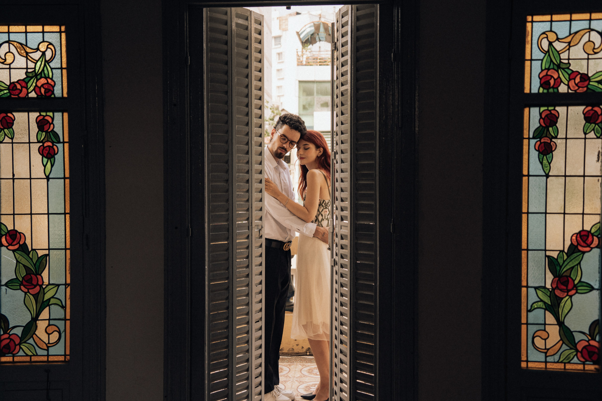
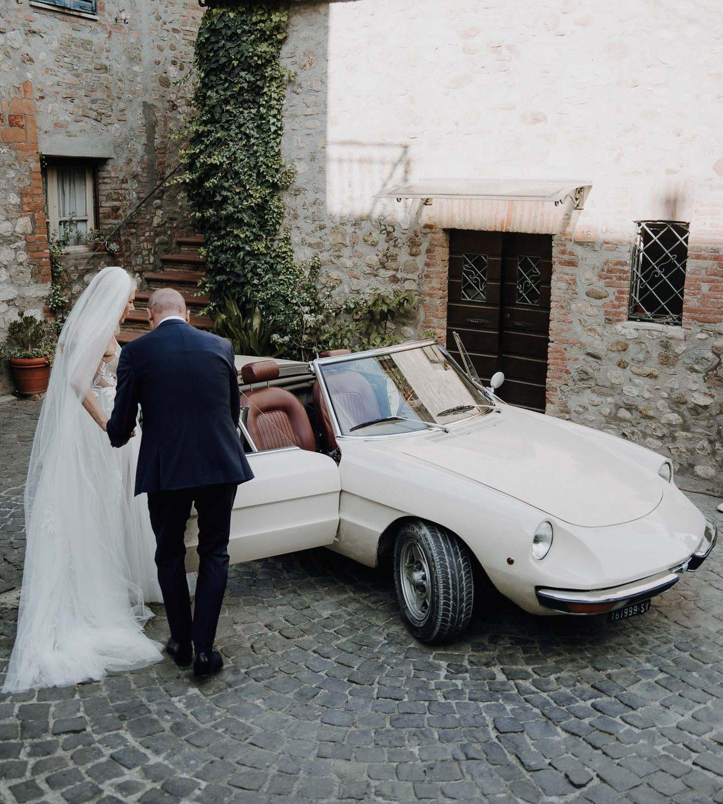

About Me
Spontan, kommunikativ, wissbegierig, kreativ. Seit ich elf Jahre alt bin liebe ich es, eine Kamera in den Händen zu halten — angefangen hat alles mit Wildlifefotografie in den Nationalparks der USA und Fotoshootings zu denen ich meine Freundinnen überredet habe. Die Wildlifefotografie begleitet mich übrigens bis heute! Nur mein Stil von angeleiteten Shootings hat sich ein bisschen verändert ;)
Was ich an diesem Beruf liebe ist das Arbeiten mit den Menschen vor der Kamera. Das gemeinsame Kreieren einer Vision. Um die perfekten Hochzeitsfotos zu schießen, möchte ich meine Paare kennenlernen, was sie ausmacht und worauf sie Wert legen. Ich ziehe nicht einfach meinen Schuh durch sondern passe meinen Stil jedes Mal leicht individuell an — mit meiner Handschrift, aber trotzdem so, dass eure ganz eigene Vision real wird.
Zu wissen, dass ich zu Erinnerungen in Familien beitragen darf ist für mich eine echte Ehre.
Antonia

„Antonia hat die Fotos unserer beider Hochzeiten sowie Baby Fotos unserer Kleinen geschossen und was sollen wir sagen? Wir sind mehr als nur begeistert! Das Ergebnis sind durchweg traumhafte Fotos aus dem Moment heraus! Sie hat ein unglaublich gutes Auge für schöne Fotos!"
J. & M.

„Antonia hat ein wahnsinnig talentiertes und gut geschultes Auge für Details. Mit ihrer empathischen Art hat sie wirklich die Essenz unserer Hochzeit festgehalten. Wir haben sie für unsere große Hochzeit direkt wieder gebucht."
J. & J.

„Große Empfehlung! Sie hat sich Zeit genommen unterschiedliche Facetten herauszuarbeiten. Ich habe mich bei ihr vor der Kamera sehr wohl gefühlt und konnte ihrem Blick total vertrauen. Würde sofort wieder bei ihr die Fotos machen lassen!"
M. K., Schauspieler
